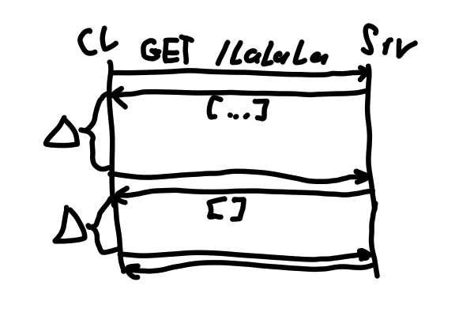
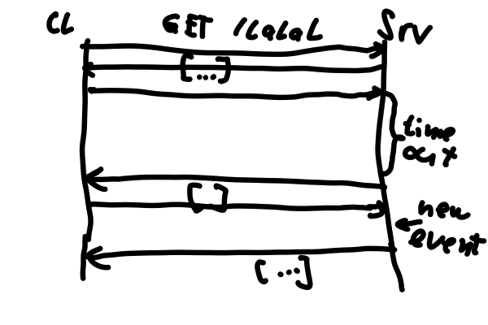
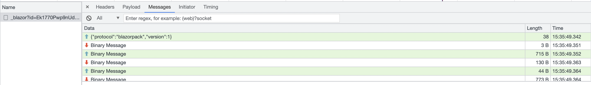

<!doctype html>
<html>
<head>
    <meta charset="utf-8">
    <meta name="viewport" content="width=device-width, initial-scale=1.0, maximum-scale=1.0, user-scalable=no">
    <link rel="stylesheet" href="reveal/css/reveal.css">
    <link rel="stylesheet" href="reveal/css/theme/kontur-light.css" id="theme">
    <!-- Theme used for syntax highlighting of code -->
    <link rel="stylesheet" href="reveal/css/highlight/idea-for-light.css">
    <link rel="stylesheet" href="reveal/css/highlight/darkula-for-dark.css">
    <!--[if lt IE 9]>
    <script src="reveal/js/html5shiv.js"></script>
    <![endif]-->
    <script defer src="reveal/js/head.min.js"></script>
    <script defer src="reveal/js/reveal.js"></script>
    <script defer src="reveal/initialize.js"></script>
    <script defer src="reveal/js/d3.min.js"></script>

    <style>
        .slides .center {
	    text-align: center;
        }
    </style>

    <title>SignalR и Blazor</title>
</head>
<body>

<div class="reveal"><div class="slides">

<section data-markdown><script type="text/template">

# Передача данных от сервера к клиенту

</script></section>

<section data-markdown><script type="text/template">

## Проблема

Нужно строить приложение, моментально реагирующие на изменения:
- отправка новых сообщений;
- получение статуса оплаты;
- и т.д.

***

## Зачем?

Чтобы пользователь не пропустил важные события.

***

### Поллинг

Постоянные запросы с небольшими промежутками между ними.

<p></p>

***

### Long polling

- запросы с большим таймаутом;
- сервер отдаёт данные, когда появляются новые, либо отдаёт пустое сообщение по таймауту

<p></p>

***

### Web sockets

- Постоянное соединение с сервером
- Бинарные и текстовые данные
- Протокол WebSockets

<p></p>

***

### Server-sent events (EventSource)

- Постоянное соединение с сервером
- Только текстовые данные
- Односторонняя связь
- Протокол HTTP

</script></section>

<section data-markdown><script type="text/template">

# SignalR
    
</script></section>
    
<section data-markdown><script type="text/template">

## Что это

Библиотека, предназначенная для использования с ASP.NET.
Абстракция над 4 транспортами:
- WebSockets (основной транспорт);
- EventSource;
- Long polling;
- iframe с отдельным соединением (только для Internet Explorer)

***

## Зачем
Чтобы не реализовывать самим использование транспортов, переключение между ними и реконнект.

***

Есть два варианта использования:
- Persistent Connection (низкоуровневое управление);
- хабы (абстракция над PC, поддерживает вызов команд как со стороны сервера, так и с клиента, описываются в виде классов с методами команд).

***

## Использование на стороне сервера

```cs
public class CommentsHub: Hub
{
    public async Task SendComment(string user, string message)
    {
        await Clients.All.SendAsync("ReceiveComment", user, message).ConfigureAwait(false);
    }
}
...
services.AddSignalR();
...
endpoints.MapHub<ChatHub>("/chatHub");
```

***

Клиенты есть на JavaScript и на C#
</script></section>    


<section data-markdown><script type="text/template">

# Blazor
    
</script></section>
    
<section data-markdown><script type="text/template">
## Что это

Фреймворк для разработки веб-клиентов на C#, HTML и CSS

***

## Зачем

Чтобы разрабатывать интерактивные веб-приложения на C#

***

## Особенности
Три вида рендеринга:
- статический (вставка готового кода в HTML без интерактивности);
- серверный (для получения команд использует SignalR);
- клиентский (использует WebAssembly, тянет .NET Runtime к клиенту).

Можно использовать все библиотеки, доступные для C#.

***

## Компоненты

Содержат разметку и код в одном файле
```cs
<div class="card" style="width:22rem">
    <div class="card-body">
        <h3 class="card-title">@Title</h3>
        <p class="card-text">@ChildContent</p>
        <button @onclick="OnYes">Yes!</button>
    </div>
</div>

@code {
    [Parameter]
    public RenderFragment ChildContent { get; set; }

    [Parameter]
    public string Title { get; set; }

    private void OnYes()
    {
        Console.WriteLine("Write to the console in C#! 'Yes' button selected.");
    }
}
```

</script></section>

</div></div>
</body>
</html>
